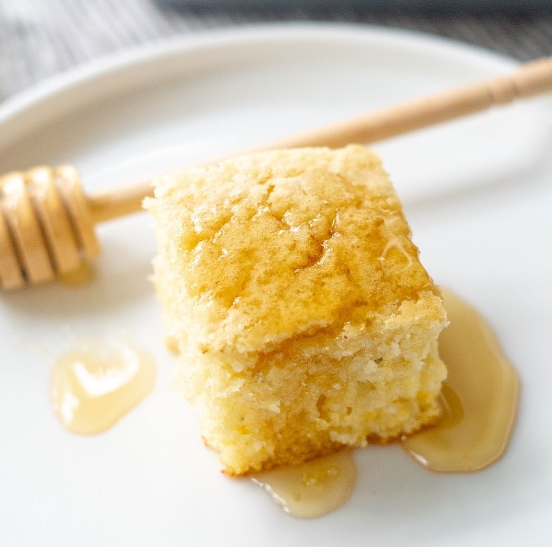

Gluten-Free Cornbread

Recipe
Total time: 40 min | Yield: 12 servings
Ingredients
- 1 c gluten-free flour blend
- 1 c gluten-free corn meal
- 1/4 c granulated sugar
- 2 tsp gluten-free baking powder
- 1/2 tsp salt
- 2 eggs, room temperature
- 1 c regular or dairy-free milk
- 1/4 c oil or melted butter
Instructions
- Preheat oven to 350 degrees F. Position rack in center of oven.
Grease a 12-serving cupcake pan; or a square 9x9x2-inch baking pan; set aside.
- In a medium mixing bowl combine flour, cornmeal, sugar, baking powder, and salt.
- In a separate medium mixing bowl, beat together eggs, milk, and oil. Add dry mixture
to wet mixture, and stir just till blended.
- Spoon batter evenly into the square pan or cupcake pans, filling about ⅔ full.
For a square pan bake for 25-30 minutes or until a wooden toothpick inserted
near center comes out clean. For muffins, bake for 20 minutes or until a wooden
toothpick inserted near center comes out clean.
- Store leftover muffins in an airtight container at room temperature for up to two days.